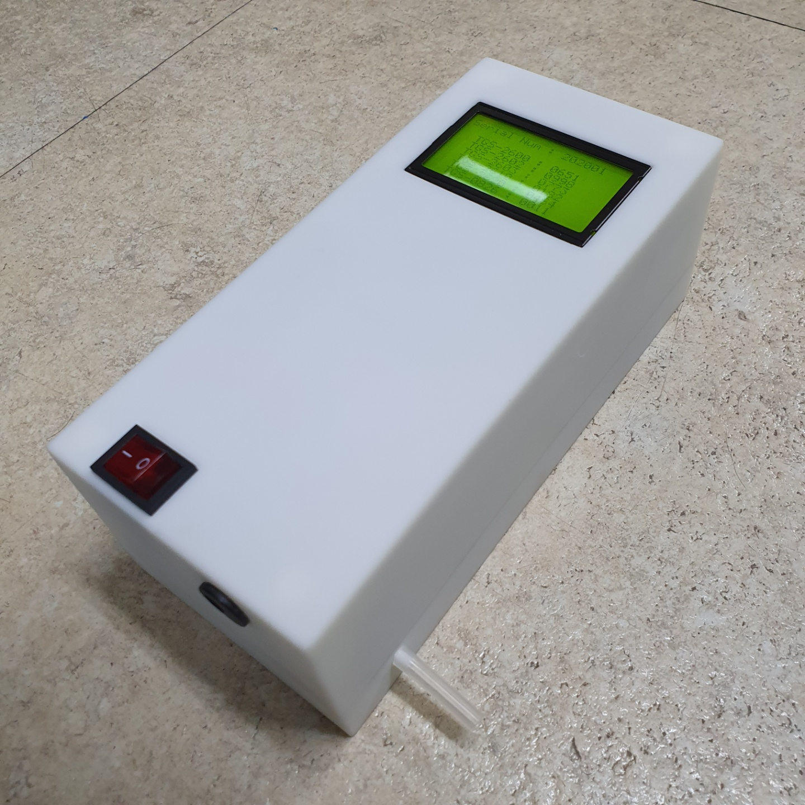

<!DOCTYPE html>
<html>
	<style>
		html, body{
		width: 100%; height: 100%;
		padding:0; margin:0;
		}
		    .wrap {position: absolute;left: 0;bottom: 40px;width: 330px;height: 160px;margin-left: -144px;text-align: left;overflow: hidden;font-size: 12px;font-family: 'Malgun Gothic', dotum, '돋움', sans-serif;line-height: 1.5;}
				.wrap * {padding: 0;margin: 0;}
					.wrap .info {width: 320px;height: 150px;border-radius: 5px;border: 2px solid #ccc;overflow: hidden;background: #fff;}
						.wrap .info:nth-child(1) {border: 0;box-shadow: 0px 1px 2px #888;}
						.info .title {padding: 5px 0 0 10px;height: 20px;background: #eee;border: 2px solid #ddd;font-size: 14px;font-weight: bold;}
						.info .body {position: relative;overflow: hidden;}
						.info .desc {position: relative;margin: 6px 0 0 115px;height: 130px;}
							.desc .ellipsis {overflow: hidden;text-overflow: ellipsis;white-space: nowrap;}
							.desc .jibun {font-size: 11px;color: #888;margin-top: -2px;}
						.info .img {position: absolute;top: 10px;left: 5px;width: 100px;height: 100px;border: 1px solid #ddd;color: #888;overflow: hidden;}
	</style>
	<head>
		<meta charset="utf-8"/>
		<title>Kakao 지도 시작하기</title>
	</head>
	<body>
		<div id="map" style="width:100%;height:100%; "></div>
		<script type="text/javascript" src="//dapi.kakao.com/v2/maps/sdk.js?appkey=d7838820396eec748ead777fbb18aebf"></script>
		<script>
			var container = document.getElementById('map');
			var options = {
				center: new kakao.maps.LatLng(35.47095556, 129.1770139),
				level: 0
			};
			//document.write("Hello World!");
			var map = new kakao.maps.Map(container, options);
			var markers = [];
			var overlays = [];
			//var newWindow = window.open("", "MsgWindow", "width=500, height=500"); 

			function CallScript(jsonArg)
			{
				setMarkers(null);
				closeoOverlays();
				markers = [];
				infowindows = [];
				var args = JSON.parse(jsonArg);
				//document.write(args);
				for (var i = 0; i < args.serial.length; i++)
				{
					Add_Marker(args.serial[i],args.ppm[i],args.ppm2[i],args.ppm3[i],args.ppm4[i],args.ppm5[i],args.ppm6[i],
					args.date[i],args.loading[i],args.local[i],args.lat[i],args.longti[i],args.conn[i])
				}
				setMarkers(map);
				//map.setLevel(0);
				//map.setCenter(new kakao.maps.LatLng(35.47095556, 129.1770139));
			}
			function Add_Marker(serial,ppm,ppm2,ppm3,ppm4,ppm5,ppm6,date,loading,local,lat,long,conn)    
			{  
			   // 마커가 표시될 위치입니다 
				var imageSrc = 'on_pin.png', // 마커이미지의 주소입니다    
				imageSize = new kakao.maps.Size(32, 32), // 마커이미지의 크기입니다
				imageOption = {offset: new kakao.maps.Point(16,32)}; // 마커이미지의 옵션입니다. 마커의 좌표와 일치시킬 이미지 안에서의 좌표를 설정합니다.
			   
			   if(conn == "ON")
			   {
					var content = '<div class="wrap">' + 
							'    <div class="info">' + 
							'        <div class="title">' + 
										 local + 
							'        </div>' + 
							'        <div class="body">' + 
							'				<div class="img">' +
							'                ' +
							'           </div>' + 
							'            <div class="desc">' + 
							'                <div class="ellipsis">' +
							'					<table border="0px" align="left">' +
							'						<tr>' +
							'							<td>H2S</td>' +
							'							<td width ="10px"> : </td>' +
							'							<td>'+ppm+' ppm</td>'+
							'							<td width ="20px"> </td>' +
							'							<td>NH3</td>' +
							'							<td width ="10px"> : </td>' +
							'							<td>'+ppm2+' ppm</td>'+
							'						</tr>' +
							'						<tr>' +
							'							<td>CH3SH</td>' +
							'							<td width ="10px"> : </td>' +
							'							<td>'+ppm3+' ppm</td>'+
							'							<td width ="20px"> </td>' +
							'							<td>CO</td>' +
							'							<td width ="10px"> : </td>' +
							'							<td>'+ppm4+' ppm</td>'+
							'						</tr>' +
							'						<tr>' +
							'							<td>CO2</td>' +
							'							<td width ="10px"> : </td>' +
							'							<td>'+ppm5+' ppm</td>'+
							'							<td width ="20px"> </td>' +
							'							<td>CH4</td>' +
							'							<td width ="10px"> : </td>' +
							'							<td>'+ppm6+' ppm</td>'+
							'						</tr>' +
							'					</table>' +
											'</div>' + 
							'                <div class="jibun ellipsis"><br>시리얼 : ' + serial + 
																		'<br>시간 : ' + date + 
											'</div>' + 
							'            </div>' +
							'        </div>' + 
							'    </div>' +    
							'</div>';
			   if(loading=="1")
				{
					'<div class="wrap">' + 
							'    <div class="info">' + 
							'        <div class="title">' + 
										 local + 
							'        </div>' + 
							'        <div class="body">' + 
							'				<div class="img">' +
							'                ' +
							'           </div>' + 
							'            <div class="desc">' + 
							'                <div class="ellipsis">' +
							'					<br>분류 중...' +
											'</div>' + 
							'                <div class="jibun ellipsis"><br><br>시리얼 : ' + serial + 
																		'<br>시간 : ' + date + 
											'</div>' + 
							'            </div>' +
							'        </div>' + 
							'    </div>' +    
							'</div>';
				}
			   }
			   else
			   {
				   imageSrc = 'off_pin.png'; // 마커이미지의 주소입니다    
			   	   var content = '<div class="wrap">' + 
							'    <div class="info">' + 
							'        <div class="title">' + 
										 local + 
							'        </div>' + 
							'        <div class="body">' + 
							'				<div class="img">' +
							'                ' +
							'           </div>' + 
							'            <div class="desc">' + 
							'                <div class="ellipsis">' +
							'					<br>연결 끊김' +
											'</div>' + 
							'                <div class="jibun ellipsis"><br><br>시리얼 : ' + serial + 
																		'<br>마지막 시간 : ' + date + 
											'</div>' + 
							'            </div>' +
							'        </div>' + 
							'    </div>' +    
							'</div>';
			   }
			   var markerImage = new kakao.maps.MarkerImage(imageSrc, imageSize, imageOption);
			   var markerPosition  = new kakao.maps.LatLng(lat, long); 
			   // 마커를 생성합니다
			   var marker = new kakao.maps.Marker({
				  position: markerPosition
				  ,
				  image: markerImage
			   });
				var overlay = new kakao.maps.CustomOverlay({
					content: content,
					position: marker.getPosition()       
				}); 
			   // 마커에 마우스오버 이벤트를 등록합니다
			   kakao.maps.event.addListener(marker, 'mouseover', function() {
				  overlay.setMap(map);
			   });
			   kakao.maps.event.addListener(marker, 'click', function() {
				if(window.external)
				  {
					 window.external.openTab(serial);
				  }
				});
			   // 마커에 마우스아웃 이벤트를 등록합니다
			   kakao.maps.event.addListener(marker, 'mouseout', function() {
				  overlay.setMap(null);
			   });
			   // 마커에 마우스클릭 이벤트를 등록합니다
			   kakao.maps.event.addListener(marker, 'mouseup', function() {
				  // 마커에 마우스클릭 이벤트가 발생하면 c#코드의 함수를 실행합니다.
				  if(window.external)
				  {
					 window.external.openTab(serial);
				  }
			   });

			   markers.push(marker);
			   overlays.push(overlay);
			}
			function setMarkers(map) {
				for (var i = 0; i < markers.length; i++) {
					markers[i].setMap(map);
				}            
			}
			function closeoOverlays(){
				for (var i = 0; i < overlays.length; i++) {
						overlays[i].setMap(null);
					}            
			}
			function closeOverlay() {
				overlay.setMap(null);     
			}
		</script>
	</body>
</html>
